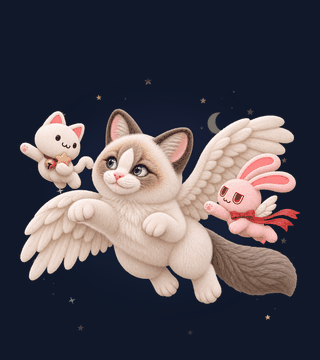
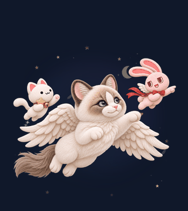
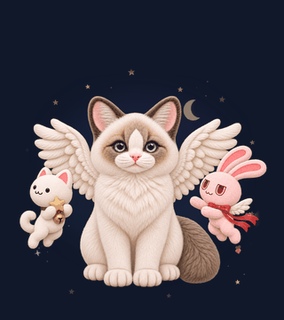

천사 레토 · 비행과 마우스 따라보기
레토 실제 몸 크기를 기준으로 표시해요. 타토는 푸른 별빛, 멜로디는 붉은 하트빛으로 함께 반응해요.
왼쪽 드래그

타토가 앞서고 멜로디가 따라오며 함께 비행해요.오른쪽 드래그

멜로디가 이끌고 타토가 뒤따라요.마우스 360° 따라보기
이 영역 안에서 마우스를 움직여 보세요.기본 대기 · 랜덤 변형

앞서 만든 왼쪽 바라보기 동작은 기본 대기에서 한 바퀴씩 랜덤으로 재생해요.